History
Towards the end of World War II, the Germans introduced the Panther V, a successor to the Panther III and Panther IV models.Ahead of the Normandy invasion,the Allies wanted to estimate how many of these tanks they might encounter during battle. The only information they had to estimate this was the serial number of the parts of tanks they had captured or destroyed.
Based on just this information, Allied statisticians provided remarkably accurate estimates of German tank production as confirmed from documents captured at the end of the war.1
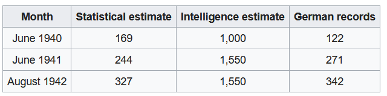
Figure 1: Comparison of Estimates and Actual Figures
This post attempts to present a solution to this problem using both frequentist and bayesian approaches.
Assumptions
The tanks are numbered sequentially. i.e. if the first tank was numbered \(n\) ,the second tank would be numbered \(n+1\).
Each tank encountered can come from anywhere in the sequence.
Problem
Given the above assumptions and re-labeling the tank numbers to start from 1, the problem can be re-stated as follows:
Given a collection of \(k\) integers, \(n_1,\dots,n_k\) sampled independently and uniformly from the range \(1\) to \(N\), what is the value of \(N\) ?
Model
The first step is to write down a model that gives the likelihood of observing some sequence of numbers when the parameter of interest \(N\) takes a particular value. This is the likelihood function. In this case, the likelihood of observing any one tank is given by
\[ \begin{equation} P[n_1 | N = \textbf{n}] = {\frac{1}{n}} , for\ \textbf{1} \leq n_1 \leq \textbf{n} \end{equation} \]
The likelihood of observing a given sequence of tanks is given by:
\[ \begin{equation} P[n_1 \dots n_k | N = \textbf{n}] = \big( {\frac{1}{n}}^k \big) , for\ \textbf{1} \leq n_1, \dots,n_k \leq \textbf{n} \end{equation} \]
This captures the idea that each number in the sequence is equally likely and the samples are independent.
The Frequentist Approach
Estimator
A statistic is a function that maps a sample of data to a single number, it is a quantity derived from the data. An estimator is a statistic used to estimate a population parameter. For example, if we want to estimate the mean of a population from a sample, the sample mean and the median are valid estimators.
For the German tank problem, a good estimator turns out to be2:
\[ \hat{N} = m \cdot \frac{k+1}{k} - 1 \]
where \(m = Max(n_1,\dots,n_k)\)
A good way to sanity check this estimator is by evaluating the boundary conditions.
If you observe only one tank, \(k =1\), with a serial number \(n_1\), then \(\hat{N} = 2n_1 -1\). i.e. the total number of tanks is double the serial number you observed,which makes sense, since you are more likely to observe a tank near the mean of the distribution.
If you observe all the tanks, \(k = N\), with the maximum serial number of \(n_N\) which is same as \(N\),then \(\hat{N} = N \cdot \frac{N+1}{N} - 1 = N\). This means the estimate is again correct.
Let the tank numbers observed be 324,167,129 and 418.Then the estimated number of tanks are:
obs <- c(324,167,129,418)
k <- length(obs)
max_ <- max(obs)
max_*((k+1)/k) - 1## [1] 521.5This estimator also has the nice property of being the Minimum Variance Unbiased Estimator. In the below two sections, I take a quick detour to understand what these term means. Feel free to skip over these sections.
Unbiased Estimator
If an estimator is unbiased, the expectation or expected value of the estimator equals the true value of the parameter.
Let \(t_n\) be an estimator at a given sample size \(n\) of the true parameter \(\theta\). If the estimator is unbiased
\[ E[t_n] = \theta \] It may be easier to illustrate this idea by considering Variance. Now, Variance is a measure of dispersion that almost everyone is familiar with. It is given by :
\[ Var(X) = \frac{1}{n} \sum_{i=1}^{n}(x_i - \mu)^2 \]
Despite the above definition of variance, the unbiased estimate of variance is given by.3
\[\hat{Var(X)} = \frac{1}{n - 1} \sum_{i=1}^{n}(x_i - \mu)^2 \] Consider a population given by \(N(0,1)\). i.e. a Normal Distribution with mean = 0 and variance = 1.
We will evaluate both formulations of variances, the one that has an expected value equal to the true variance (=1) is the unbiased sample variance.
set.seed(0)
# Take 1000 draws of size 10 from the population
samples <- replicate(1000, rnorm(10,0,1))
# Function to calculate both version of variance
var_ <- function(s){
mean <- mean(s)
n <- length(s)
var_unbiased <- 1/(n-1)*sum((s - mean)^2)
var_biased <- 1/(n)*sum((s - mean)^2)
return(c("var_unbiased" = var_unbiased,"var_biased" = var_biased))
}
#Calculate sample variances
variances <- apply(samples,2,var_)
#Calculate expected value of both sampling distributions
variances_expected <- apply(variances,1,mean)
variances_expected## var_unbiased var_biased
## 0.9952352 0.8957116As you can see the unbiased sample variance is much closer to the true variance than the biased sample variance.
Minimum Variance
A minimum variance unbiased estimator is guaranteed to have the lowest possible variance among all unbiased estimators.
Consider the sample mean and the sample median. Both are unbiased estimators of the population mean.
Again, consider a population given by \(N(0,1)\).
set.seed(0)
# Take 1000 draws of size 10 from the population
samples <- replicate(10000, rnorm(10,0,1))
# Function to calculate mean and median
m <- function(s){
mean_ <- mean(s)
median_ <- median(s)
return(c("mean" = mean_,"median" = median_))
}
#Calculate sample means and sample medians
ms <- apply(samples,2,m)
#Calculate expected value of both sampling distributions
ms_expected <- apply(ms,1,mean)
ms_expected## mean median
## 0.001409647 0.003353574We see that both are fairly close to the population mean. But if we evaluate the variance as shown below.
#Calculate variance of sampling distributions
apply(ms,1,var)## mean median
## 0.09868766 0.13808784We see that the variance for the sample median is much higher.This shows that the sample mean, rather than the sample median is the minimum variance estimator of the population mean.
Confidence Intervals
We have an estimator to obtain a point estimate for the Number of tanks. We also want to construct a confidence interval around this estimate with some significance level( \(\alpha = 5\)%)
The lower bound for the Number of tanks is given by \(m\), the maximum number we observe, as it is certain that the enemy has at least \(m\) tanks.
We have to establish an upper bound for the 95% ( \(1 - \alpha\)) confidence interval.
To get to this we must answer the following question.
Given a collection of \(k\) integers, \(n_1,n_2,\dots,n_k\) sampled independently and uniformly (with replacement) from the range \(1\) to \(N\), what is the probability that the maximum value we observe i.e. \(Max(n_1,\dots,n_k)\) is \(\geq\) m ?
The probability of observing a maximum value less than or equal to \(m\), or the cumulative probability mass function is given by \(P [Max \leq m ] =(\frac{m}{N})^k\) i.e. all tanks observed should have a number less than \(m\)
The probability of observing a maximum value greater than \(m\) is given by:
\[ P [Max \gt m ] = 1 - (\frac{m}{N})^k \]
We can determine the upper bound of the confidence interval by setting above value equal to \(1 - \alpha\) and solving for \(N\) which gives:
\[ N_{1 - \alpha} = \frac{m}{(\alpha)^\frac{1}{k}} \]
We can conduct an experiment to validate the results as shown below. Assume there are a hundred different spies who each observe some tanks and record the serial numbers. From each spy’s observation we can estimate the total number of tanks and construct a confidence interval around each estimate.
# True number of tanks
N <- 500
# Number of tanks observed
k <- 4
# Assume a 1000 different spies observe tanks and record the maximum number they observe.
set.seed(1)
##Function to simulate k tanks observed by a spy
f <-function(N,k){sample(c(1:N),k,replace = TRUE)}
# Record the tank numbers observed by a 1000 spies
obs <- replicate(1000,f(N,k))
# Get maximum observed by each spy
max_ <- apply(obs,2,max)
# Get estimate of Number of tanks
N_hat = max_*(k+1)/k -1
hist(N_hat)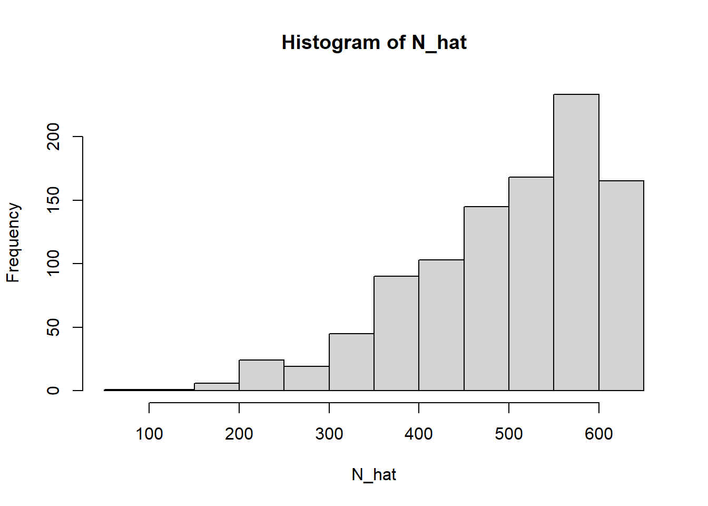
Let us extract the maximum number observed by the first spy and the estimated number of tanks based on this observation.
## The tank numbers observed by the first spy are : 324 167 129 418## The maximum tank number observed by the first spy is 418## The estimated number of total tanks based on this number is 521.5Now we can also calculate a 95% confidence interval around each of these estimates.
alpha <- 0.05
N_95 <- floor((max_)/(alpha)^(1/k))
ci <- rbind('Lower_Bound'= max_,'Upper_Bound'=N_95)The confidence interval around the estimate from the first spy’s observations is given by
ci[,1]## Lower_Bound Upper_Bound
## 418 883By definition, if we calculate a 95% confidence interval around an estimate, 95% of calculated confidence intervals should contain the true value.
We can calculate the number of confidence intervals containing the true value of 500.
bool = ci[1,] <= N & ci[2,]>= N
sum(bool)## [1] 951This shows that approximately \(1 - \alpha = 0.95\), or 95% of confidence intervals contain the true value which is consistent with the frequentist definition of confidence intervals.
We can plot the estimate and confidence intervals as shown below.
library(ggplot2)
library(dplyr)
# Construct a full data frame for plotting
df <- data.frame(cbind(c(1:(ncol(ci))),N_hat,t(ci)))
colnames(df) <- c("N","Estimate","Lower_Bound","Upper_Bound")
df %>% head(5) %>%
ggplot(aes(x=N,y = Estimate)) + geom_point() + geom_errorbar(aes(ymin=Lower_Bound, ymax = Upper_Bound))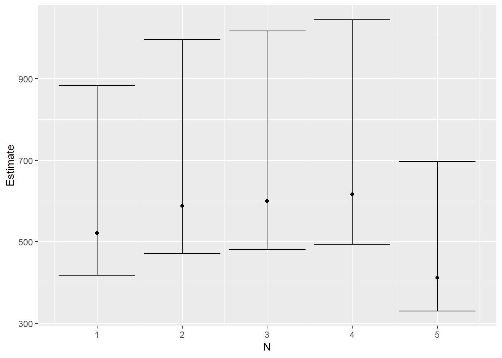
P- value
We have defined a confidence interval above. but how does it relate to a p-value?
Consider that there are 500(N=500) tanks the Germans had in battle. The probability mass function of the maximum serial number observed \(m\), for \(k\) observation given \(N\) tanks exist is given by
\[ P [Max = m ] = \begin{cases} (\frac{m}{N})^k - (\frac{m-1}{N})^k,& \text{if } m\leq N\\ 0, & \text{otherwise} \end{cases}\]`
This can be plotted as shown below.
pmf <- function(m,N,k){
return((m/N)^k - ((m-1)/N)^k)
}
m_ = c(1:N)
pmf_ <- sapply(m_,pmf,N,k)
plot(m_,pmf_,type="l",xlab = "Max", ylab="probability density")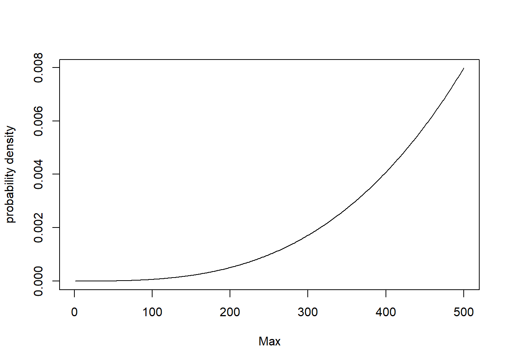
Now we have to define a rejection region. If the maximum \(m\) we observe is within this rejection region, we reject the hypothesized value of \(N\).
The confidence interval we calculated corresponds to defining a rejection region on the left tail of the distribution.
Assuming a \(\alpha (=5 \%)\) significance level, this rejection region can be determined by calculating the value of \(m\) where the cumulative mass function has a value of \(\alpha\).
\[ (\frac{m'}{k})^N = \alpha \]
\[ m' = \alpha^{\frac{1}{k}}N \]
rejection_region_max = floor(alpha^(1/k) * N)
rejection_region_max## [1] 236The rejection region is given by the shaded area in the figure below. 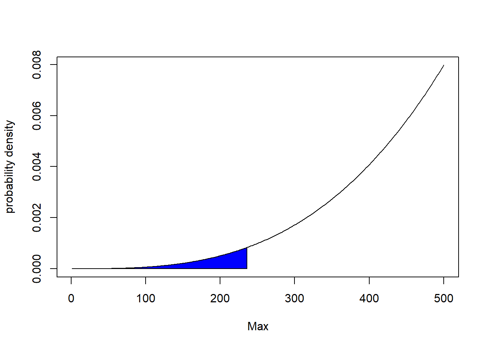
So if the maximum serial number we observe \(m\) is less than 236, we can reject the null hypothesis, that the actual number of tanks is 500.
As noted in the earlier section, the maximum tank number observed by the first spy is 418. So, we do not reject the null hypothesis that the actual number of tanks is 500. Now, what are the possible values of N, where we would reject the null hypothesis given we observed a maximum of 418 ?
Well,what about N = 417 ? If there were only 417 tanks in total, we would not observe a tank with a serial number of 418, so we can rule out 417 as well as all values of N between 1 and 417
Then, what bout N = 883. We would reject this null hypothesis if we observe a maximum tank number less than:
cat(round(alpha^(1/k) * 883,2))## 417.54Given the spy observe a tank number of 418, we don’t reject this null hypothesis either.
What about N =884,We would reject this null hypothesis if we observe a maximum tank number less than:
cat(round(alpha^(1/k) * 884,2))## 418.02OK - So we did observe a tank number less than 418.02, so we reject this null hypothesis. We do the same for all hypothesized values of N greater than 884.
So the range of hypothesized values of N for which we don’t reject the null hypothesis is [418,883]. This is exactly the confidence interval computed above!
Significance Level
For both confidence intervals and p values, I specified a significance level \(\alpha = 5 \%\). This is simply the likelihood of rejecting a null hypothesis when it is true i.e. the probability of a false positive.
Given the distribution of \(m\) for a hypothesized value of \(N\) in Figure X, there is still an \(\alpha\)% chance that we will observe a value of \(m\) in the rejection region and incorrectly reject the null hypothesis.
Similarly, there is an \(\alpha = 5\)% chance that the true value of \(N\) falls outside the \(1 -\alpha = 95\)% confidence interval.
Now you might wonder what is the probability of a false negative. This is related to the power of a statistical test which I will not explore in this blog. The references at the end of the blog will be useful if you want to explore this idea.
A more conservative confidence interval
Now let us assume we want to be a bit more risk averse about underestimating the number of tanks. This may be because the war is in its early stage when German manufacturing capabilities had not been severely depleted by Allied bombing.
If the maximum we observe is \(m\), we want the confidence interval to be conservative and be defined by a range starting at \(m+i\), where \(i\) is some whole number, rather than \(m\).
In other words, we want the 95% confidence interval to capture a range more like the upper image rather than the lower image.
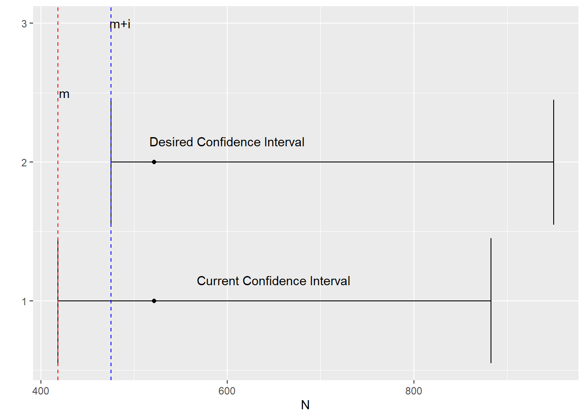
First, we want to first establish the lower bound of this new confidence interval.
As established earlier, the probability of observing a maximum value greater than \(m\) is given by:
\[ P \big( Max \gt m \big) = 1 - (\frac{m}{N})^k \]
By setting above value equal to \(\alpha\) and solving for \(N\) gives:
\[ N_{\alpha} = \frac{m}{(1 -\alpha)^\frac{1}{k}} \]
This gives the lower bound of the confidence interval.
Now, what is the upper bound of the confidence interval ? The upper bound turns out to be \(\infty\).
We can again conduct an experiment to validate the results as shown below.
We can calculate a new 95% confidence interval around each estimate as shown below.
alpha <- 0.05
N_05 <- ceiling((max_)/(1- alpha)^(1/k))
ci_desired <- rbind(N_05,rep(Inf,N))Calculate number of confidence intervals containing the true value of 10000.
bool = ci_desired[1,] <= N & ci_desired[2,]>= N
sum(bool)## [1] 943This shows that approximately \(1 - \alpha = 0.95\), or 95% of confidence intervals contain the true value which is again consistent with the frequentist definition of confidence intervals.
The confidence interval around estimated number of tanks observed by the first spy is:
cat("[",ci_desired[1,1],",",round(ci_desired[2,1],0),"]")## [ 424 , Inf ]P-value
How does this new confidence interval relate to p-values.
This new confidence interval we define simply corresponds to defining a rejection region on the right tail of the distribution.
Assuming a \(\alpha (=5 \%)\) significance level, this new rejection region can be determined by calculating the value of \(m\) where the cumulative probability mass function has a value of \(1 - \alpha\)
\[ (\frac{m'}{N})^k = 1 -\alpha \] \[ m' = (1 -\alpha)^{\frac{1}{k}}N \] Let our null hypothesis be that the number of tanks is 500, then the rejection region is given by the shaded region in the figure below.
rejection_region_min = (1-alpha)^(1/k) * N
rejection_region_min## [1] 493.6293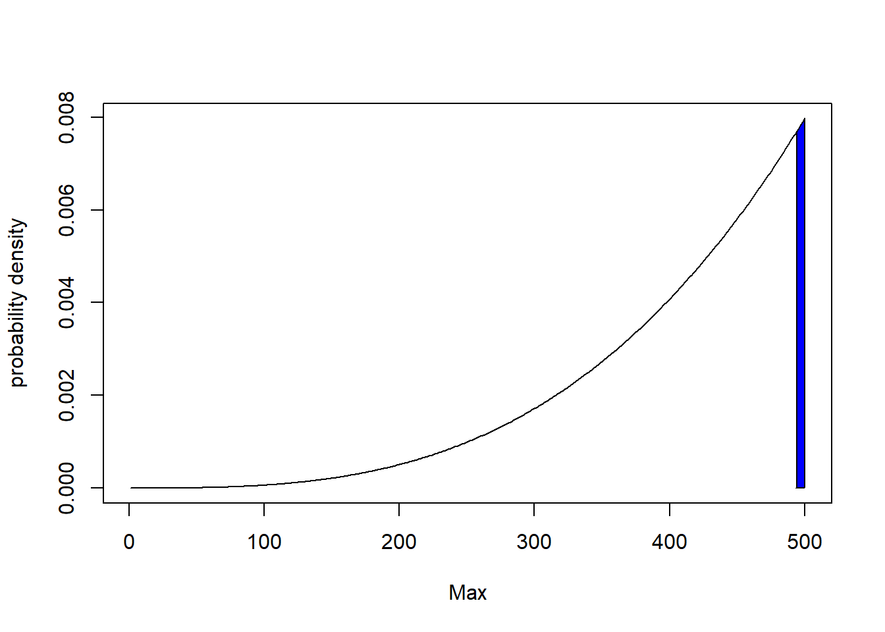
So if the maximum serial number we observe \(m\) is greater than 493, we can reject the null hypothesis \(H0: N = 500\)
As noted in earlier section, the maximum tank number observed by the first spy is 418. So, we do not reject the hypothesis that the actual number of tanks is 500. Now what are the possible values of N, where we would reject the null hypothesis given we observed a maximum of 418 ?
What about N = 423. We would reject this null hypothesis if we observe a maximum tank number greater than :
cat((1 - alpha)^(1/k) * 423)## 417.6104Given the maximum we observed is 418, we reject this null hypothesis.
What about N = 424. We would reject this null hypothesis if we observe a maximum tank number greater than :
cat((1 - alpha)^(1/k) * 424)## 418.5976Given the spy observed a tank number of 418, we don’t reject this null hypothesis either.
What about N =10000, We would reject this null hypothesis if we observe a maximum tank number greater than :
cat((1 - alpha)^(1/k) * 10000)## 9872.585Given the spy observe a tank number of 418, we don’t reject this null hypothesis either.It follows that we won’t reject the null hypothesis for any value of N greater than 424.
So the range of hypothesized values of N for which we don’t reject the null hypothesis is \(\[424,\infty\]\). This is exactly the confidence interval computed above.
Limitations of the Frequentist Approach
Not withstanding the fact that the definition of confidence intervals is confusing 4, we see that the two ways of computing the confidence interval can give answers of wildly varying utility. There is also no technical reason why one confidence interval is preferable compared to the other.
The Bayesian Approach
An alternative to the Frequentist Approach we covered above is a Bayesian approach 5. Just like we calculated confidence intervals, we can can calculate a credible interval for the number of tanks the enemy has, given the tank serial numbers observed by a spy.
Although this simple enough problem to solve analytically 6, a more general approach is to solve this using a Markov Chain Monte Carlo sampler. This can be done by using the software package JAGS and the R interface to JAGS rjags.
Let us consider the tanks observed by the first spy.
y <- obs[ ,1]
y## [1] 324 167 129 418Fo this analysis, we will use a set of utility functions available as part of the book Doing Bayesian Data Analysis by John Kruschke.
source("utilities.R")## Loading required package: coda## Linked to JAGS 4.3.1## Loaded modules: basemod,bugsrequire(rjags)
require(coda)First, the data to be analyzed is packaged into a list to be shipped to the JAGS sampler.
# Put data into a list
dataList <- list(
y = y, # Observations
Ntotal = length(y), # No of observations
y_max = max(y) # Maximum tank number observed
)To complete a Bayesian analysis, in addition to the likelihood function we covered at the beginning of this post, we also need to define a prior.
The prior should be informed by our understanding of the problem and the domain.
To begin with, given our estimates of German production capacity towards the end of the war, we might know that the Germans have no more than 1000 tanks. Given we have no further information, we will assume a uniform prior i.e. any number of tanks between the maximum observed by the spy and 1000 is equally likely.
We can specify this models as shown below.
#Define the model
library(rjags)
model0 = "
model {
for ( i in 1:Ntotal ) {
y[i] ~ dunif(0,N) #Likelihhod
}
N ~ dunif( y_max, 1000) #Prior
}"If this were the beginning of the war, we would think the Germans have a much higher production capacity. We would revise the top end of our prior estimate from 1000 to 10000.
model1 = "
model {
for ( i in 1:Ntotal ) {
y[i] ~ dunif(0,N) #Likelihhod
}
N ~ dunif( y_max, 10000) #Prior
}"At the end of the war, we might even have more information on the German production capacity that allows us to have a more precise prior. For e.g. we might have a prior belief think the number of tanks the enemy has is characterized by the following distribution.
hist(rgamma(1000,25,0.05),main = " Prior belief at end of war")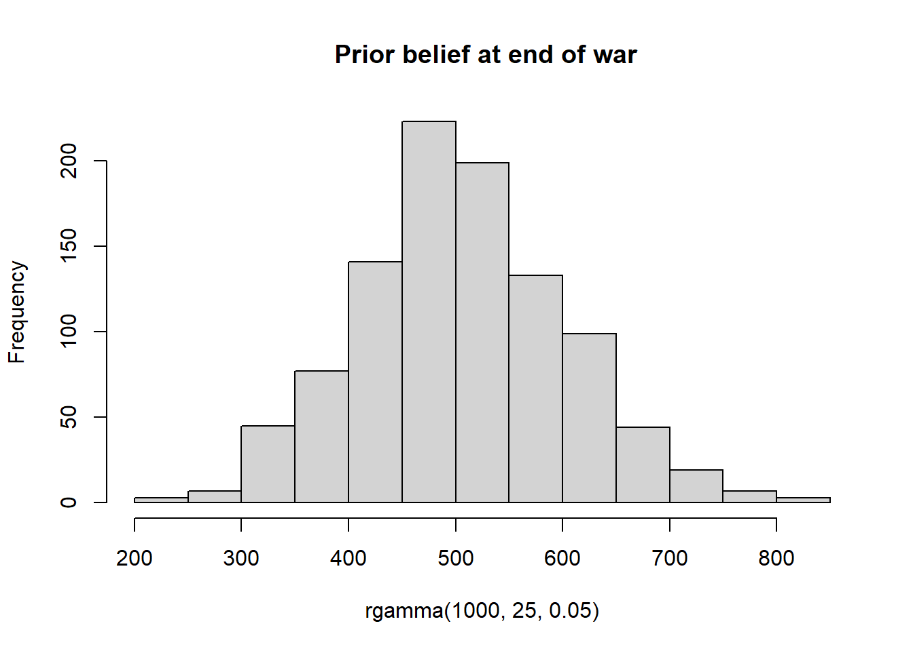
We can define a model with this more precise prior as shown below.
#Define the model
library(rjags)
model2 = "
model {
for ( i in 1:Ntotal ) {
y[i] ~ dunif(0,N) #Likelihhod
}
N ~ dgamma(25,0.05) #Prior
}"Run Models
For each of these priors, we can now run MCMC samplers to infer what the posterior distribution of tanks is given the tank numbers observed by a spy.
When running the chains, it is typical to specify a burn in period so as to discard the few initial values before the chain has settled on the true posterior. The number of steps to be taken to tune/adapt the samplers can also be specified.
parameters = c( "N") # The parameters to be monitored
adaptSteps = 500 # Number of steps to adapt/tune the samplers
burnInSteps = 500 # Number of steps to burn-in the chains
nChains = 4 # nChains should be 2 or more for diagnosticsThe three models can now be run and analyzed.
Model 0 - End of War with limited intelligence
# Run the chains:
jagsModel0 = jags.model(file= textConnection(model0) , data=dataList ,
n.chains= nChains , n.adapt= adaptSteps )## Compiling model graph
## Resolving undeclared variables
## Allocating nodes
## Graph information:
## Observed stochastic nodes: 4
## Unobserved stochastic nodes: 1
## Total graph size: 9
##
## Initializing model# Burn in to stabilize the chains
update( jagsModel0 , n.iter= burnInSteps )
# Run chains to estimate posterior distribution
codaSamples0 = coda.samples( jagsModel0 , variable.names=c("N") ,
n.iter=2500 )Note that running the diagnostics on the sampled chains is an important part of the Bayesian analysis. See this post to learn more about diagnostics.
The posterior distribution resulting from this model can now be analyzed.
par( mar=c(3.5,0.5,2.5,0.5) , mgp=c(2.25,0.7,0) )
plotPost( codaSamples0[,"N"] , main="N" , xlab="N" )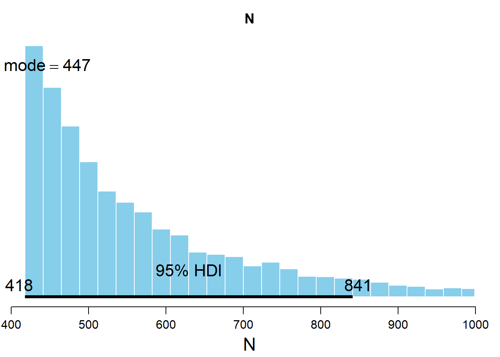
## ESS mean median mode hdiMass hdiLow hdiHigh
## N 2036.402 556.6577 512.555 446.73 0.95 418.0032 841.3058We see that the bayesian inference procedure gives us a credible interval comprising the values with the highest density. Rather than a confidence interval where the information we have is limited to whether the true value lies inside or outside the confidence interval, this credible interval gives the posterior probability of the parameter value.
We can also estimate the probability that the actual Number of tanks is between any two values. For example, the probability that the number of tanks is between 418 and 500 is given by.
posterior <- unlist(codaSamples0)
prob_419_500 <- sum((posterior>= 419 & posterior <= 500))/length(posterior)
cat("The probability that the number of tanks is between 419 and 500 is:",prob_419_500)## The probability that the number of tanks is between 419 and 500 is: 0.4487Model 1 - Beginning of war with limited intelligence
Run chains for Model 1.
# Run the chains:
jagsModel1 = jags.model(file= textConnection(model1) , data=dataList ,
n.chains= nChains , n.adapt= adaptSteps )## Compiling model graph
## Resolving undeclared variables
## Allocating nodes
## Graph information:
## Observed stochastic nodes: 4
## Unobserved stochastic nodes: 1
## Total graph size: 9
##
## Initializing model# Burn in to stabilize the chains
update( jagsModel1 , n.iter= burnInSteps )
# Run chains to estimate posterior distribution
codaSamples1 = coda.samples( jagsModel1 , variable.names=c("N") ,
n.iter=2500 )The posterior distribution resulting from this model can now be analyzed.
par( mar=c(3.5,1.5,2.5,0.5) , mgp=c(2.25,0.7,0) )
plotPost( codaSamples1[,"N"] , main="N" , xlab="N", xlim = c(100,2000) )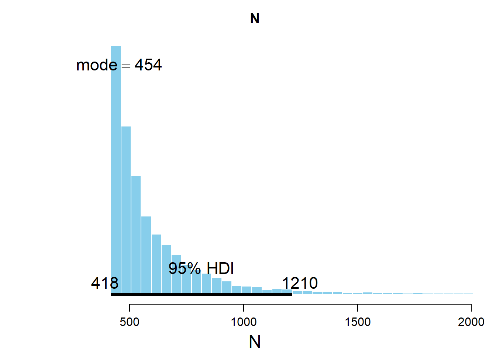
## ESS mean median mode hdiMass hdiLow hdiHigh
## N 241.2465 643.6212 527.8942 454.1553 0.95 418.0154 1213.298In this case, we see that the posterior distribution is much wider than in Model 0.
This is fully expected given we are at the beginning of the war where German production capabilities are fully intact. Even though the highest tank number we observed was 418, we expect the enemy to have a much larger number of tanks then towards the end of the war.
Model 2 - End of war with superior intelligence
Run chains for Model 2.
# Run the chains:
jagsModel2 = jags.model(file= textConnection(model2) , data=dataList ,
n.chains= nChains , n.adapt= adaptSteps )## Compiling model graph
## Resolving undeclared variables
## Allocating nodes
## Graph information:
## Observed stochastic nodes: 4
## Unobserved stochastic nodes: 1
## Total graph size: 9
##
## Initializing model# Burn in to stabilize the chains
update( jagsModel2 , n.iter= burnInSteps )
# Run chains to estimate posterior distribution
codaSamples2 = coda.samples( jagsModel2 , variable.names=c("N") ,
n.iter=2500 )The posterior distribution resulting from this model can now be analyzed.
par( mar=c(3.5,0.5,2.5,0.5) , mgp=c(2.25,0.7,0) )
plotPost( codaSamples2[,"N"] , main="N" , xlab="N" )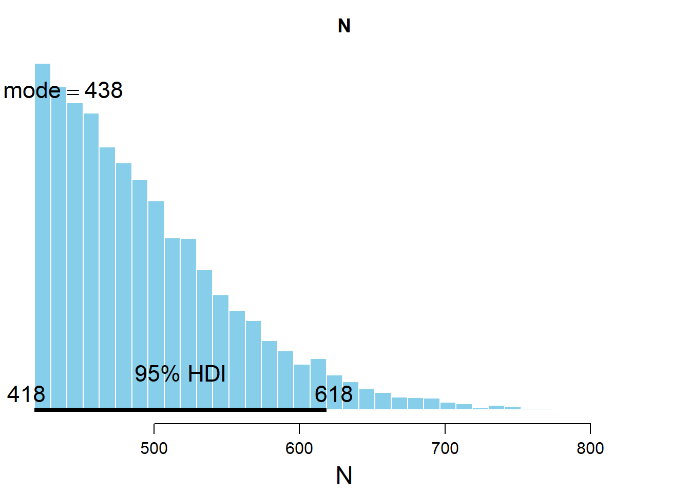
## ESS mean median mode hdiMass hdiLow hdiHigh
## N 2796.591 495.5214 480.9062 437.8477 0.95 418.0296 618.4802Given the improved intelligence we have a the end of the war, we see that we can arrive at a much narrower posterior and hence a more confident estimate.
Conclusion
We have used frequentist and statistical inference to solve the German Tank problem. In this particular problem, the benefits of the Bayesian approach are evident. Besides being more intuitive, it also obviates the need for concepts like rejection regions and p-values.
The code underlying this blog post is available here.
References and Further Reading
- Doing Bayesian Data Analysis : A Tutorial with R, JAGS, and Stan
- Bernoulli’s Fallacy: Statistical Illogic and the Crisis of Modern Science
- https://www.isaacslavitt.com/posts/german-tank-problem-with-pymc-and-pystan/
- https://www.mjandrews.org/blog/germantank/
Footnotes
https://en.wikipedia.org/wiki/German_tank_problem↩︎
https://www.youtube.com/watch?v=quV-MCB8Ozs↩︎
https://en.wikipedia.org/wiki/Variance#Population_variance_and_sample_variance↩︎
http://jakevdp.github.io/blog/2014/06/12/frequentism-and-bayesianism-3-confidence-credibility/↩︎
https://www.govindgnair.com/post/introduction-to-bayesian-methods/↩︎
https://www.mjandrews.org/blog/germantank/↩︎